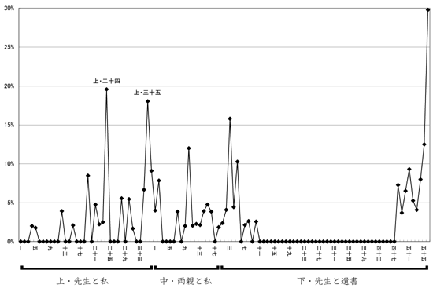

単純集計
テキストデータを計量的に分析する際には、1つ1つの言葉というよりも、むしろむしろ事柄・概念・カテゴリといったものの出現数を数えたい場合が多いのではないでしょうか。例えば、「人の死」という事柄は、必ずしも「死ぬ」という言葉によってのみ表されるわけではありません。「死ぬ」の他に、「亡くなる」や「自殺」といった言葉があったときにも、「人の死」という事柄として数えたいのではないでしょうか。
ここで役立つのが前述のコーディングルール・ファイルです。「死ぬ or 無くなる or 自殺 or ...」といった検索条件をコーディングルール・ファイルに記述しておけば、KH Coderはその条件に合致する文書に「＊人の死」というコードを与えます。（この作業をコーディングと呼びます）あとは、コードの数を集計すれば良いだけです。
この図は、説明ページで例示したコーディングルール・ファイルを使って、コーディングと（コード出現数の）単純集計を行った画面です。
- コマンド： 「ツール」→「コーディング」→「単純集計」
クロス集計
同じコーディングルール・ファイルを使って、「上」「中」「下」といった部分ごとに、コードの出現数を集計した例です。
ここからは、「上」「中」に比べて、「下」では「＊死」というコードの出現率が倍増しているといったことが読み取れます。
こういった集計の他にも、例えば自由回答データを扱う場合には、年代別や男女別の集計なども行えます。
- コマンド： 「ツール」→「コーディング」→「章・節・段落ごとの集計」
グラフ作製
扱ったデータ（漱石「こころ」）全体の中で、「＊死」というコードの出現数がいかに推移しているかを詳しく調べるためにグラフを作製した例が下図です。
|  |
| 出典： 樋口耕一 2003 「コンピュータ・コーディングの実践 ―漱石『こころ』を用いたチュートリアル―」 『年報人間科学』 24: 193-214 |
この図を見ると、主要な登場人物の死が描かれていない「上・先生と私」においても、「人の死」という事柄を大きく取り上げた節が存在したといったことに気づかされます（特に上・二十四と上三十五）。
いくつかの事柄に注目しながら、こういった形のグラフを作成している間には、単にデータを読んでいるだけでは見出しにくいようなデータの特徴に気がつくこともあるではないでしょうか。
- コマンド： 「ツール」→「コーディング」→「章・節・段落ごとの集計」
- ＋表計算ソフト上でグラフ作製
コード間の関連
コーディングの結果を使って多変量解析（MDS）を行い、関連が強い（と推測される）コードほど近くに布置されるような図を作成したものが下図です。注目したいと思う（複数の）事柄をコーディングルールの形で記述（コード化）すれば、こういった形で、それぞれの事柄の間の関連を調べることができます。
 |
| 出典： 樋口耕一 2002 「コンピュータ・コーディングによる社会情報の分析」 大阪大学大学院 修士論文 |
「犯罪」と「トラブル」の関連が強いといったことは至極当たり前なのですが、、、ここで、「あれ？」と思うようなコード間に関連があれば（なければ）、それは発見のチャンスかもしれません。なぜ関連があったのか（なかったのか）を、検索機能を使って元のテキストデータにあたりながら調べてみるとよいでしょう。
- コマンド： 「ツール」→「コーディング」→「多次元尺度構成法」
|